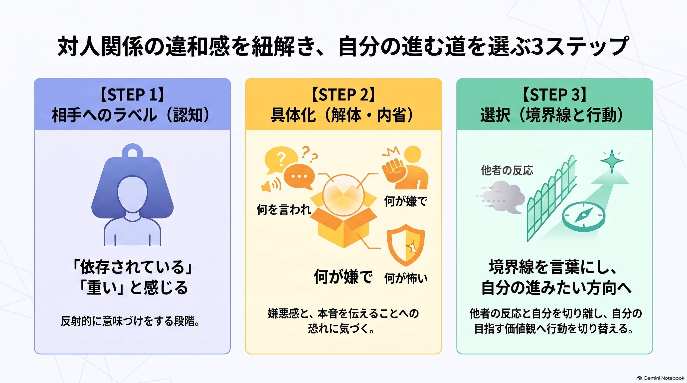

受け取りやすい形を、一つ選んでください
全部をこなす必要はありません。今の自分に合う入口から、ゆっくり受け取ってください。
音声で聴く（16分33秒）
一枚図解で見る

音声・スライド・図解は、今回の匿名化した一次情報をもとに作成しています。理解を助ける一つの見方であり、本人の内面や原因を決めつけるものではありません。
違和感は、選び直す入口になる
相手を「依存している」と決める前に、何を言われ、何を嫌と感じ、何を伝えるのが怖いのかへ戻る。その時、逃げる・耐える以外の選択肢が見え始めます。
今回見えた流れ
本人発言
重たい、会社へ行きたくない
手術後の休業を伝えた場面で、強い感情と仕事の話を向けられた。
薫ちゃんの問い
「依存」は何をした状態？
抽象的な評価を、実際の言葉・態度・自分の反応へ戻した。
本人発言
本当に嫌だったもの
強い感情を浴びること、構えてしまうこと、嫌だと伝える怖さ。
考えるための見方
違和感が守る境界
自分で考え、自分で選ぶ余地を守りたい、という見方もできます。答えを決めるのではなく、自分の実感を確かめるための入口です。
クリちゃん自身の言葉
「間違ったら間違ったでいいし、そのままの自分をこう出して弾けばいい」
「感じたものをそのまま、これが嫌なんですってちゃんと伝えることを恐れてる」
一問
最近の違和感を一つ選び、「相手がおかしい」を使わず、自分が嫌だったことと、守りたかったことを一文ずつ書くと何ですか。